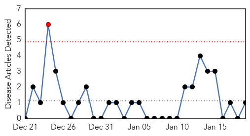
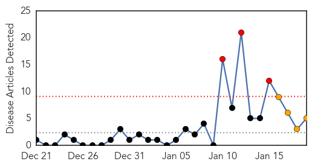
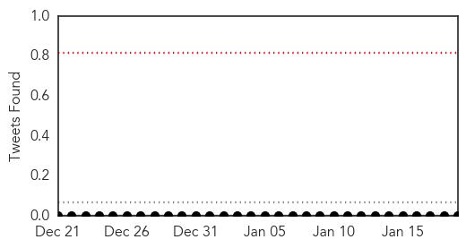
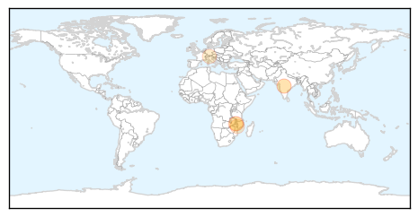
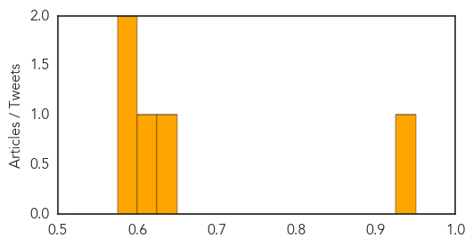

Hepatitis
30-Day Web Trend
1 alerts, 0 warnings

30-Day Twitter Trend
0 alerts, 0 warnings

Article Locations

Article Confidences

Top Articles:
Top Tweets:
-
No tweets found for Jan 19, 2015
Cholera
30-Day Web Trend
3 alerts, 4 warnings

30-Day Twitter Trend
0 alerts, 0 warnings

Article Locations
Article Confidences
Top Articles:
- 0.929
- Original cholera vaccine turns up in Jerusalem
- 0.632
- SA to help flood-hit Malawi - Africa
- 0.605
- Waterborne diseases becomes priority in flood-stricken Malawi
- 0.589
- Waterborne Diseases a Priority in Flood-Stricken Malawi — Naharnet
- 0.588
- Waterborne-disease prevention priority in flood-stricken Malawi
Top Tweets:
-
No tweets found for Jan 19, 2015